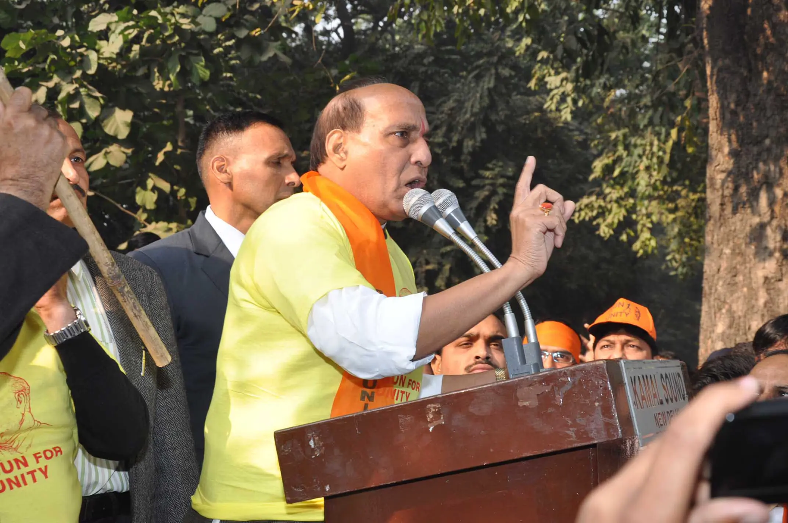
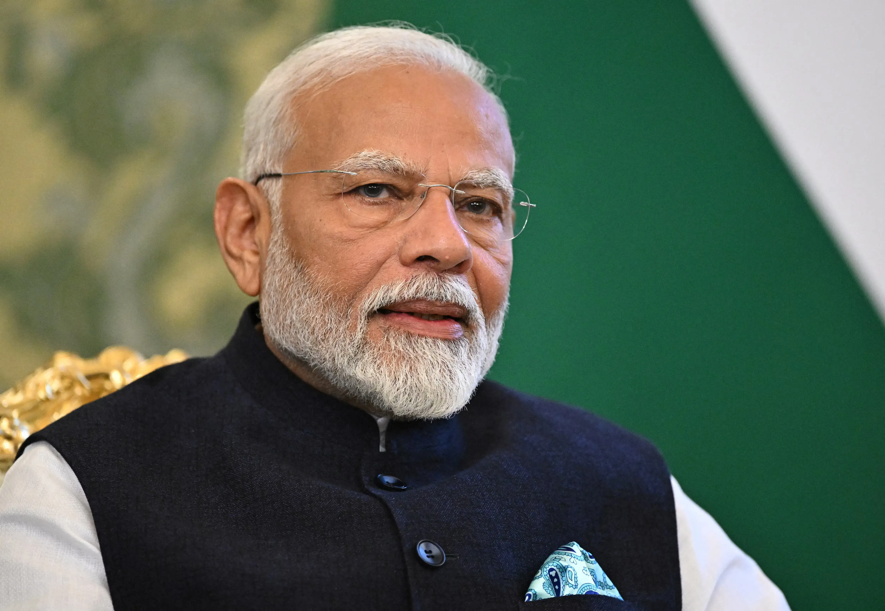
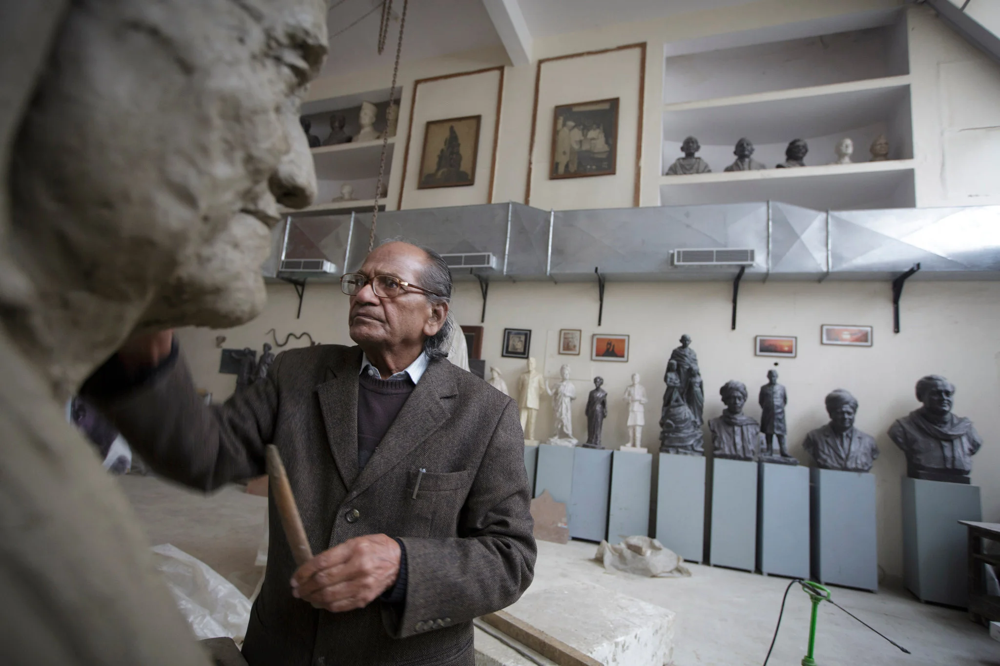

Statue of Unity
Legendary
Awe-Inspiring


$87 million
2012-2015
$37 million
2014-2015

| Years | Visitors |
|---|---|
| 2018 | 450.000 |
| 2019 | 2.7 million |
| 2020 | 1.2 million |
| 2021 | 3.4 million |
| 2022 | 4.6 million |
| 2023 | 5 million |
The founders

